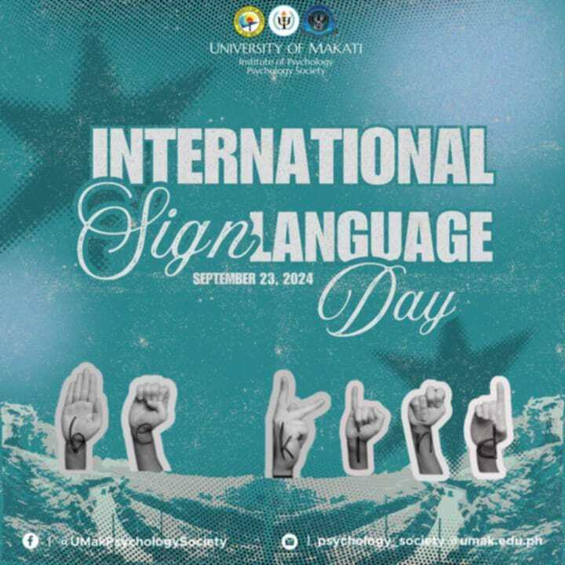

Center for Inclusive Education - Gender and Development

"Let us make a difference for everyone because development is for all"
The University of Makati goes beyond what is seen and what is heard because development is for all. Amidst all challenges and circumstances, as one community, we always take pride as we celebrate and imbrace inclusivity.
SERVICES


What's New?

September 18, 2024
VOTE FOR THE PHILIPPINES, VOTE FOR RSLAA!
Help our country by sharing this with your friends and colleagues and loved ones.

September 23, 2024
This International Sign Language Day let us champion every individual to appriciate and recognize the importance of sign language as it connects us people in different ways!
#InternationalSignLanguageDay2024